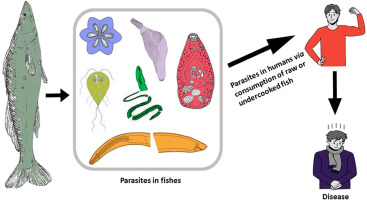

ONGOING SYSTEMATIC LITERATURE REVIEW
Multisectoral Control of Fish-Borne Zoonotic Parasitic Infections Along the Fish Food Chain
A systematic literature review examining documented control strategies for fish-borne zoonotic parasitic infections and assessing the extent to which these strategies reflect integration across human, animal and environmental health domains.
SUPERVISORS
Dr Lian Thomas
University of Edinburgh | Scotland
Dr. Nicholas Ngwili
International Livestock Research Institute| Kenya
RESEARCH TEAM
Michael Fordjour
Ghana | Pharmacist
Doreen Asoandzie
Ghana | Physician Assistant
Esther Murunga
Kenya | Public Health Specialist
Tahia Nabukenya
Uganda | Laboratory Technologist
Emily Mochama
Kenya | Pharmacist
Project overview
Fish-borne zoonotic parasitic infections represent an important but often neglected public health challenge. Transmission occurs through complex ecological and food systems involving aquatic environments, intermediate hosts, fish, animals and human populations.
Despite the relevance of these infections to human, animal and environmental health, evidence on their prevention and control remains fragmented across disciplines. This review seeks to bring that evidence together through a One Health lens.
Review objective
The review aims to identify and map documented multisectoral control strategies for fish-borne zoonotic helminth and protozoan infections along the fish food chain and assess the extent to which these strategies demonstrate integration across human, animal and environmental health domains.
Key research questions
The review examines which control strategies have been documented for fish-borne zoonotic parasitic infections, which strategies reflect a One Health approach, what patterns of interdisciplinary collaboration are evident, and where structural gaps exist across parasite groups, food chain nodes, sectors and geographic settings.

Review approach
The review follows PRISMA guidance for systematic literature reviews. Study selection and data extraction are conducted by multiple reviewers, with disagreements resolved through discussion and additional review where necessary.
The scope is structured using a PECOS framework covering fish and human populations, zoonotic helminth and protozoan parasites, documented control strategies and interventions, and outcomes relating to control, effectiveness and One Health integration.
Evidence sources
Searches cover major scientific databases and relevant grey literature sources. These include biomedical, veterinary, environmental and agricultural literature, as well as technical and regulatory documents from international organisations.
What the review maps
Included evidence is being mapped across the fish food chain, including primary production, processing and handling, distribution and trade, retail, consumption and clinical management.
Control strategies are also classified by their primary area of action, including regulatory, veterinary, food safety, environmental, community or behavioural and clinical approaches.
One Health analysis
A central component of the review is assessing how control strategies integrate human, animal and environmental health perspectives.
Studies are being classified according to predefined levels of One Health integration, ranging from single-sector approaches to formally integrated multisectoral strategies with documented cross-domain collaboration.
Expected contribution
The review aims to provide a comprehensive synthesis of documented control strategies for fish-borne zoonotic parasitic infections and identify structural gaps across parasite groups, sectors, food chain nodes and geographic settings.
The findings are expected to support future research, policy development and multisectoral approaches to controlling fish-borne zoonotic parasitic infections.